Gran fin de semana vivimos en Santiago, junto a estas 38 hermosas almas que se unieron a la familia YogaKiddy participando de nuestra formación de Yoga Infantil en el Centro de yoga mandiram 🧘♂️🕉🧘♀️
☆
Experiencia maravillosa vivida de la mano de nuestras queridas @claudia.a.lemus.3 @peggysue.s.s @madhu_gopali y @maritagarcia8 💖💖💖💖
☆
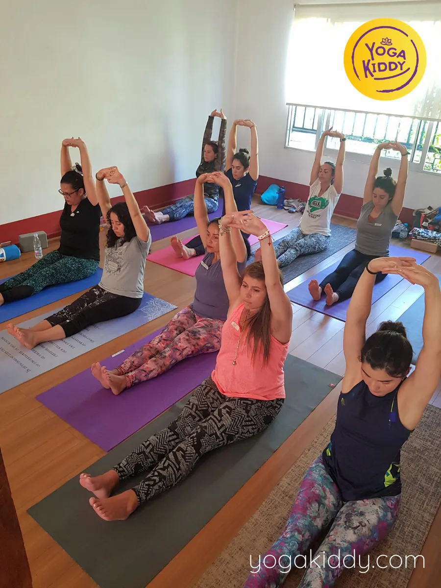
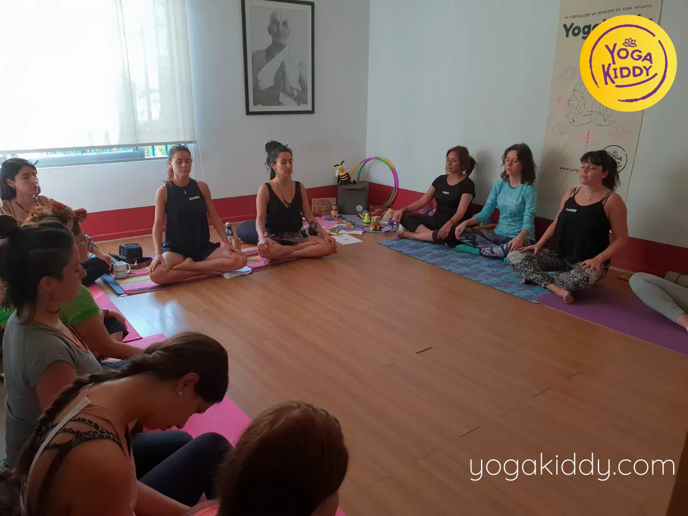
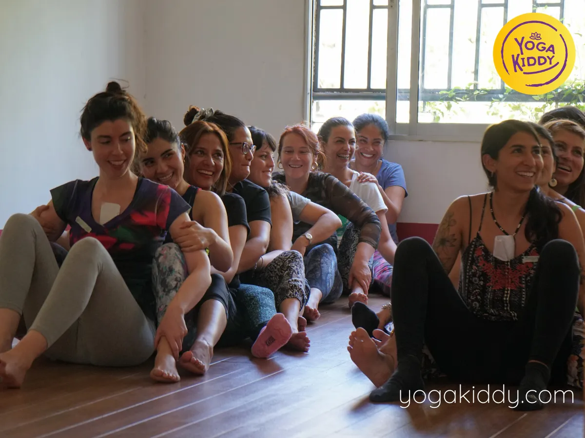
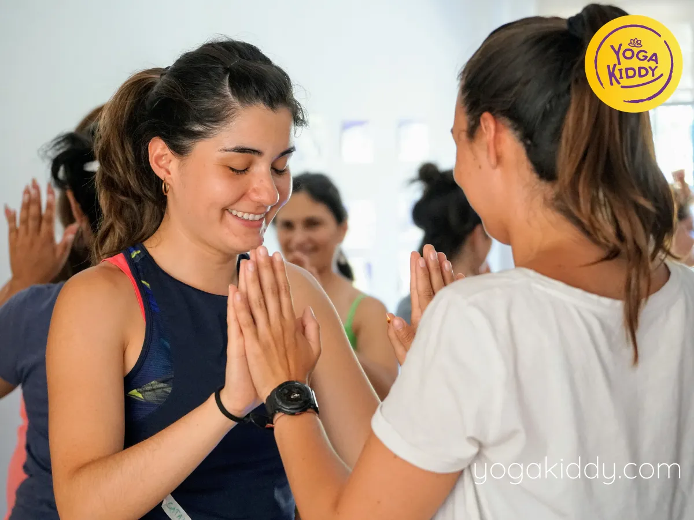
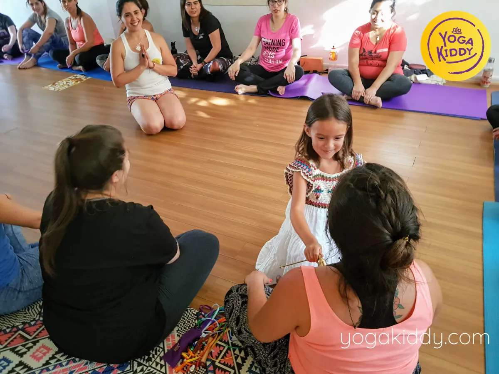
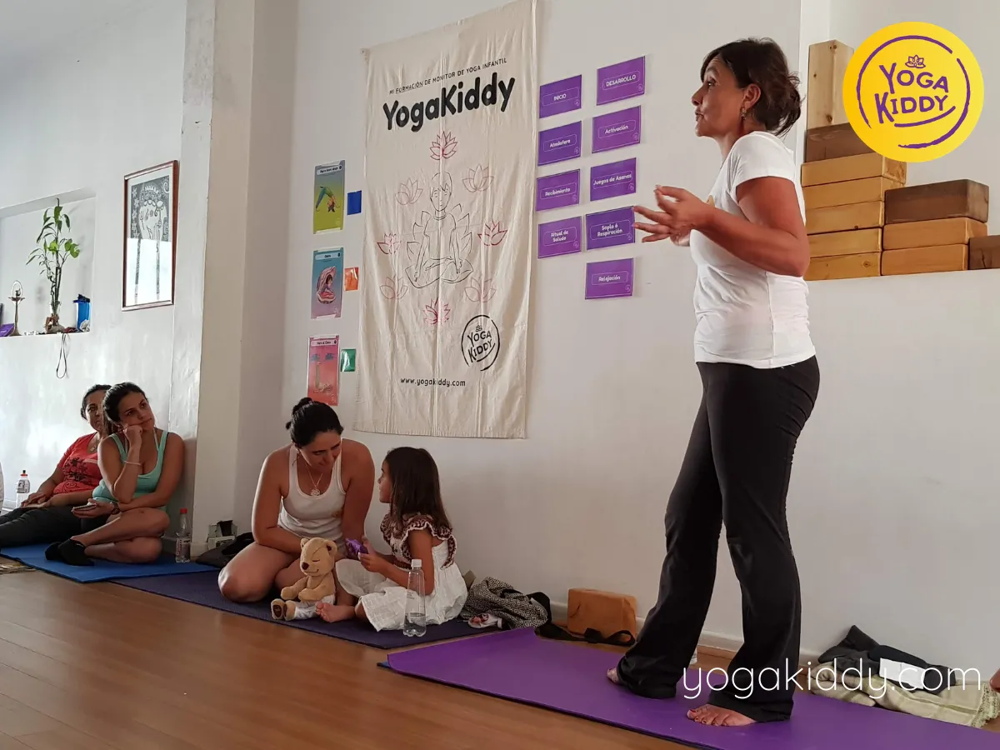
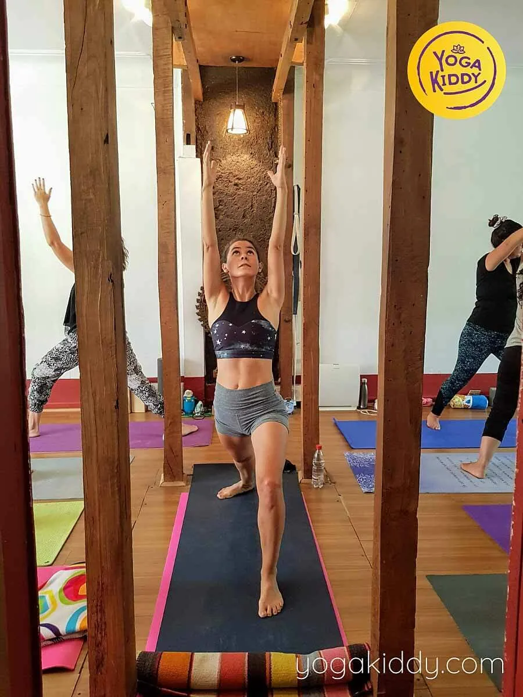
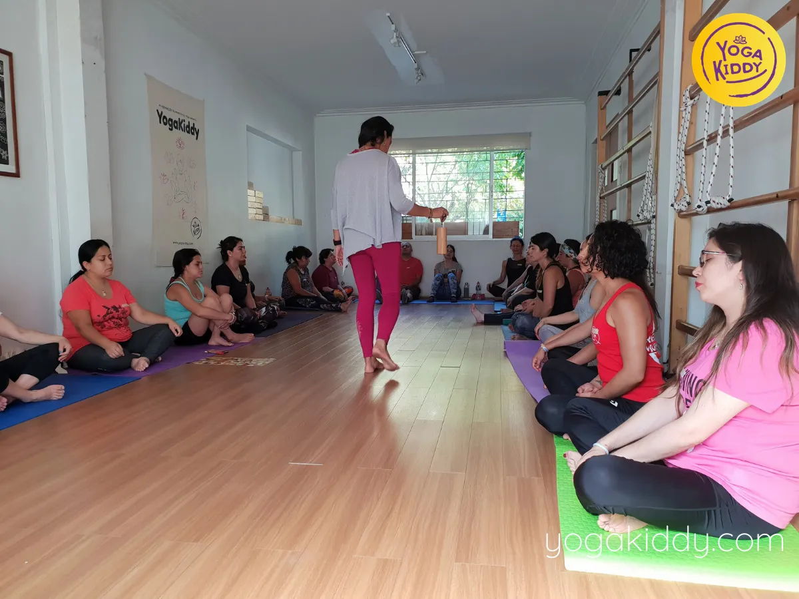
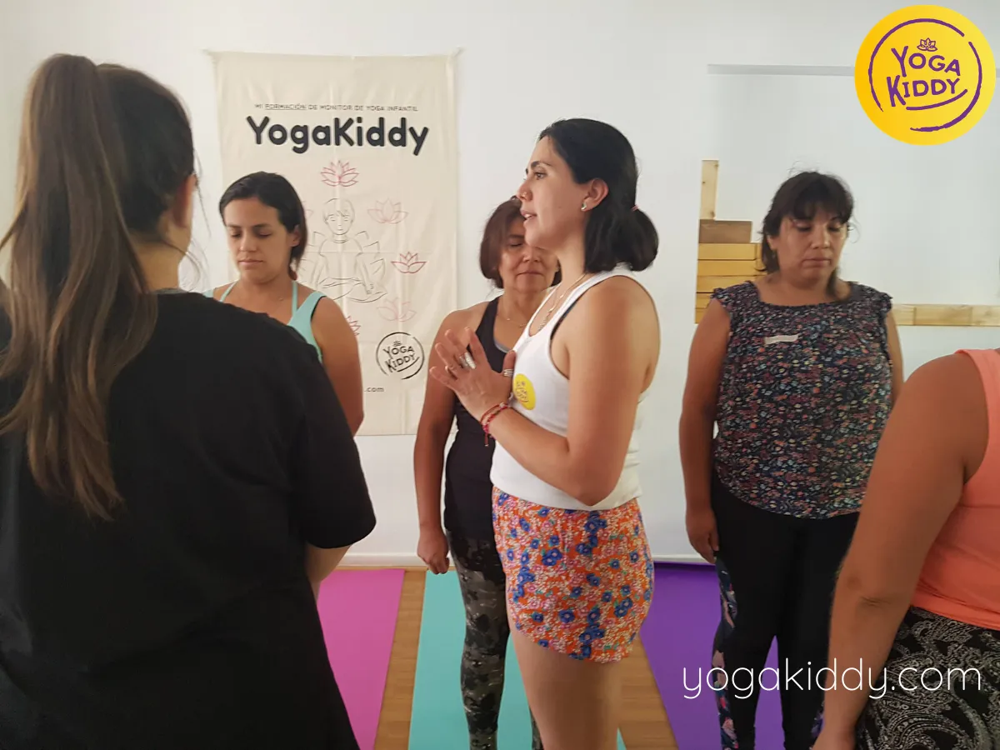
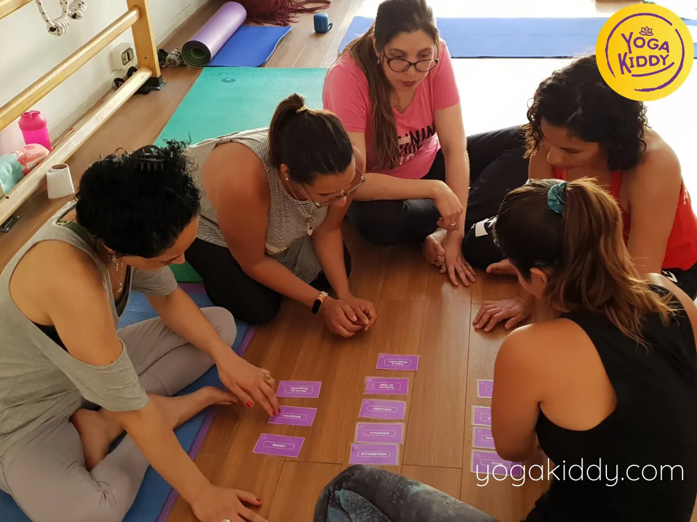
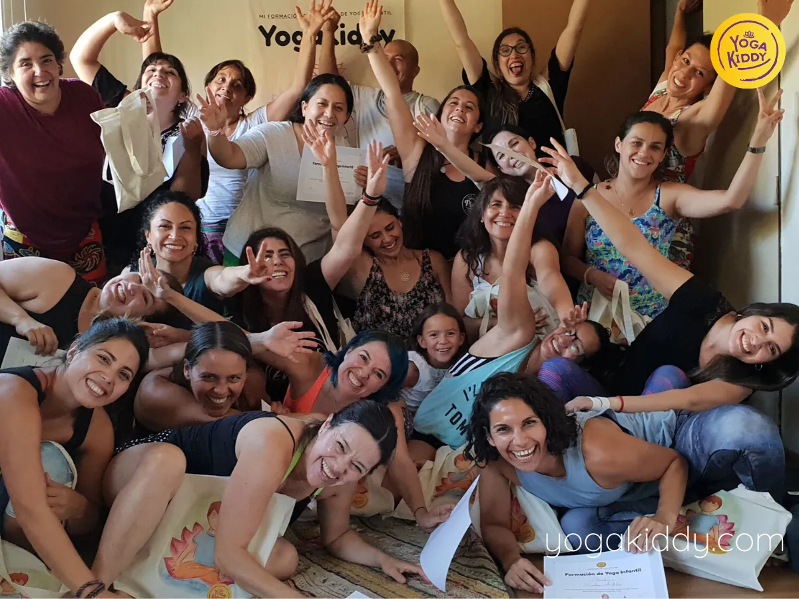
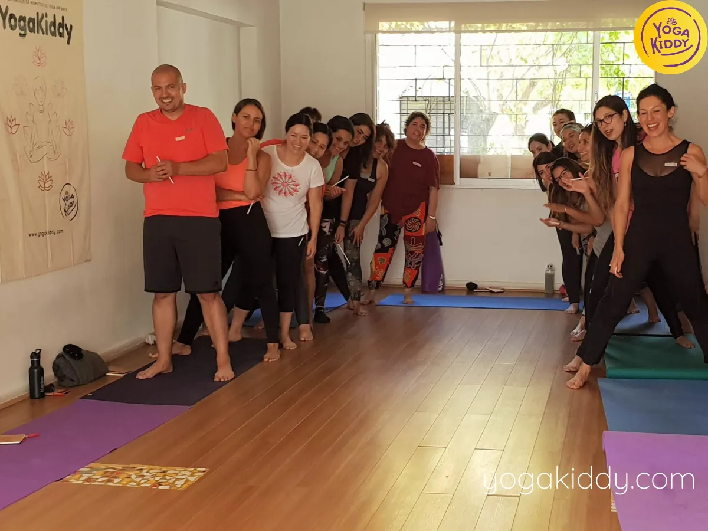
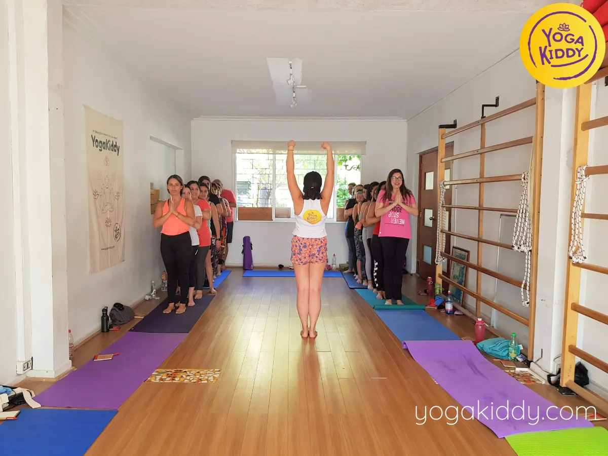
Mi nombre es Jaqueline, vengo de la IV región.Vine a hacer el curso de Yogakiddy, es un curso muy increible de experiencias, de emociones, de salir de esas emociones que tenemos adentro, de ser niños de nuevo, de personas maravillosas. Es una familia muy maravillosa la que hay acá, es muy recomendable.
Hola me llamo Sandra, tome este curso después de un tiempo que deje de trabajar. Me gustó mucho, había hecho otras cositas antes de yogacuentos pero me encantó haber participado. Así que lo recomiendo absolutamente.
Hola soy Laila de Brasil, hice este taller. Me encanto! Con mucho amor demostraron como cuidar, tratar, amar y enseñar yoga a los niños. Me voy con el corazón calentito y recomiendo a todos que lo hagan!